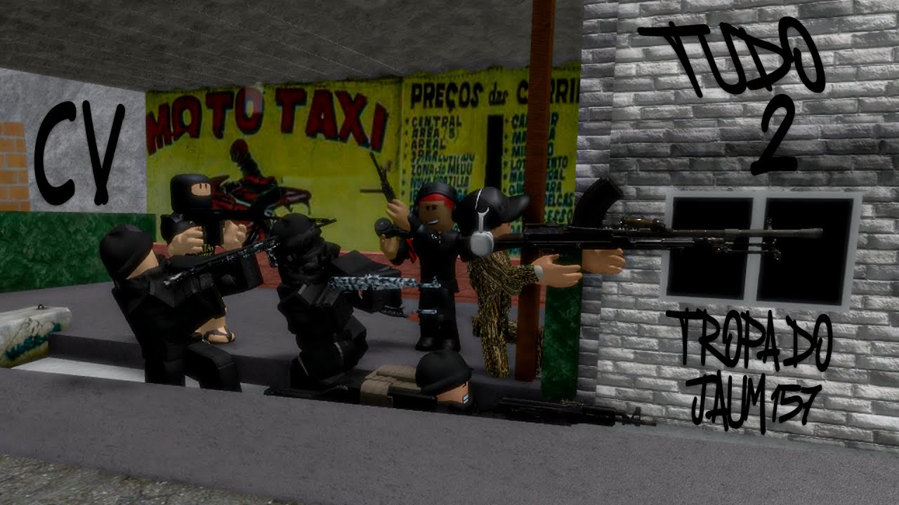
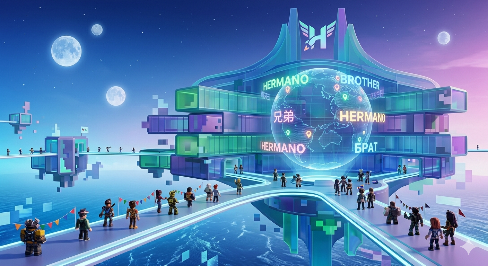
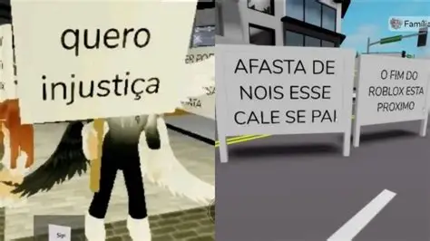
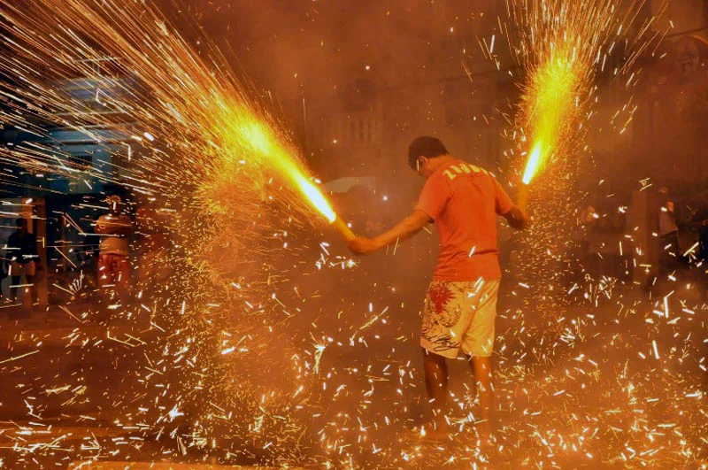
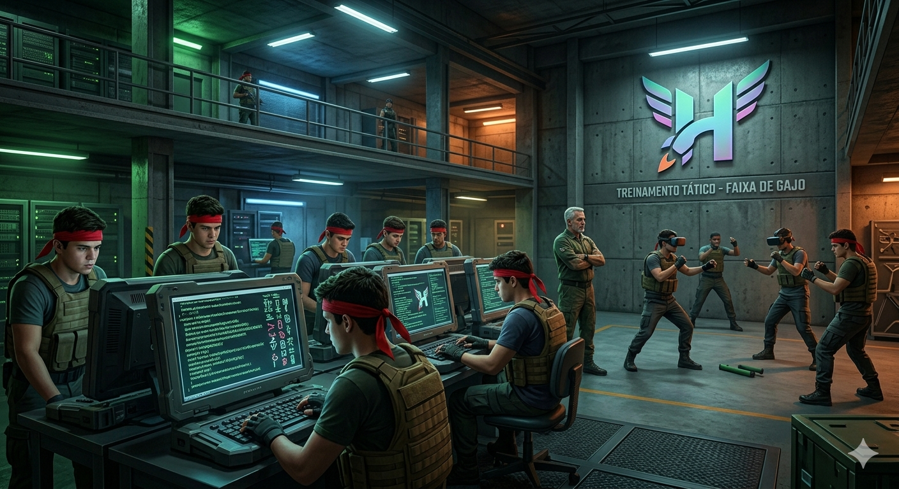

Movimento cresce nas redes e já impacta milhares de fãs pelo país.
O ministerio da defesa se preocupa se a aliança entre sandrinha e portal do hermano poderia derrubar o governo federal

Especialistas em TI tentam entender a complexidade do código por trás do Portal do Hermano.

O movimento ultrapassa as fronteiras brasileiras e chega aos servidores internacionais.

Guilhermano testa novos protótipos que prometem mudar o cenário das redes sociais.

Milhares de jovens buscam a "faixa de gajo" para representar o movimento.